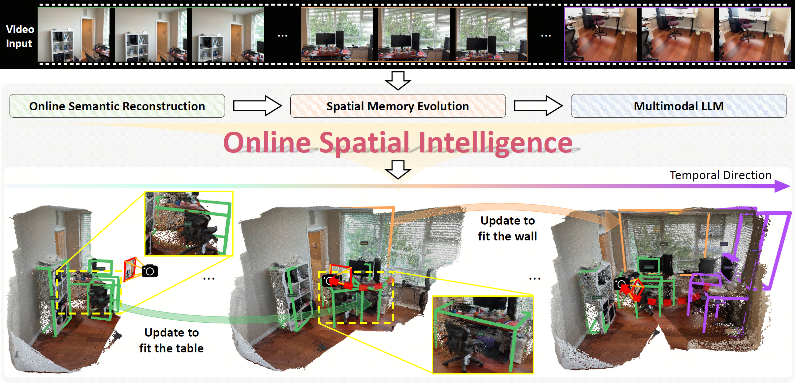
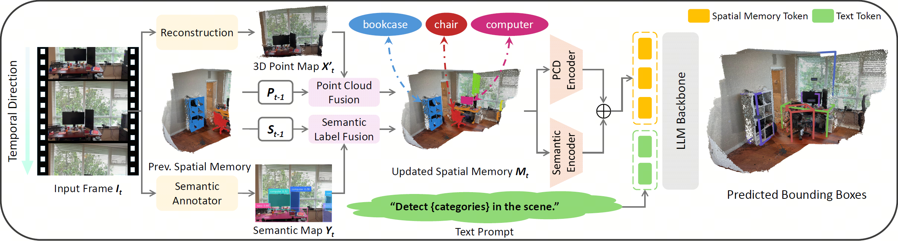
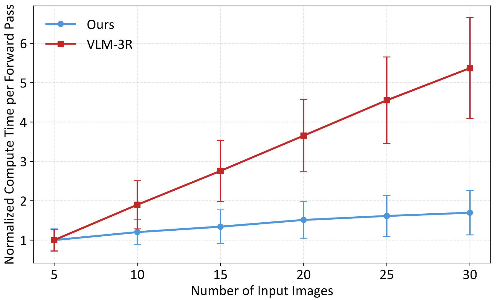
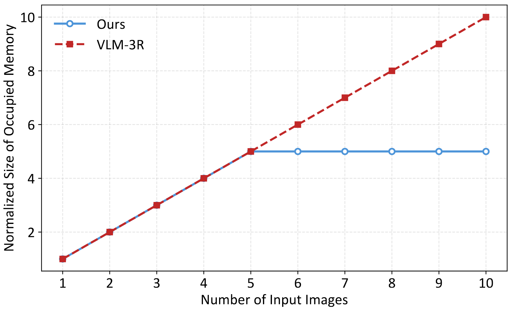

In recent years, researchers have increasingly been interested in how to enable Multimodal Large Language Models (MLLM) to possess spatial understanding and reasoning capabilities. However, most existing methods overlook the importance of the ability to continuously work in an ever-changing world, and lack the possibility of deployment on embodied systems in real-world environments. In this work, we introduce OnlineSI, a framework that can continuously improve its spatial understanding of its surroundings given a video stream. Our core idea is to maintain a finite spatial memory to retain past observations, ensuring the size of the spatial memory does not increase as the input accumulates. We further integrate 3D point cloud information with semantic information, helping MLLM to better locate and identify objects in the scene. To evaluate our method, we introduce the Fuzzy $F_1$-Score to mitigate ambiguity, and test our method on two representative datasets. Experiments demonstrate the effectiveness of our method, paving the way towards real-world embodied systems.

OnlineSI is a framework specifically designed for online 3D understanding and object grounding. Taking a video stream as input, OnlineSI performs incremental semantic reconstruction and leverages a global spatial memory to aggregate observations over time. As demonstrated in the temporal progression, this allows the framework to continuously refine its scene understanding, updating the previous detection results (e.g., ``Update to fit the table'') and incrementally detecting new object instances.

For each frame $\mathbf{I}_t$ in the video stream, we first reconstruct the pointmap $\mathbf{X}'_t$, and predict the semantic label for each point $\mathbf{Y}_t$. Next, we fuse the current pointmap and semantic map into the previous spatial memory $\{\mathbf{P}_{t-1}, \mathbf{S}_{t-1}\}$ for updating. We then use the point cloud encoder and the semantic encoder to obtain point cloud features and semantic features, respectively, and add them together as our spatial memory tokens. Lastly, we feed the spatial memory tokens and the text prompt tokens into the LLM backbone, and generate a scene description, which contains the detection results of objects in the current scene.
We compare our method with VLM-3R in both inference computation cost and memory usage.

Inference Computation Scaling Since our method generates different targets than the baseline, we compare the time consumed by a single forward pass of the model rather than the whole generation time. We divide both the computation time and standard deviation by the computation time value at $x=5$ for normalization. All experiments are conducted on the same device.

Inference Memory Usage Scaling Here we use all the previous images as the inference memory of VLM-3R, and use the spatial memory as the inference memory of OnlineSI. We divided the memory size by its value at $x=1$ in both methods for normalization.
@article{liu2026onlinesi,
title={OnlineSI: Taming Large Language Model for Online 3D Understanding and Grounding},
author={Liu, Zixian and Chen, Zhaoxi and Pan, Liang and Liu, Ziwei},
journal={arXiv preprint arXiv:2601.16538},
year={2026}
}